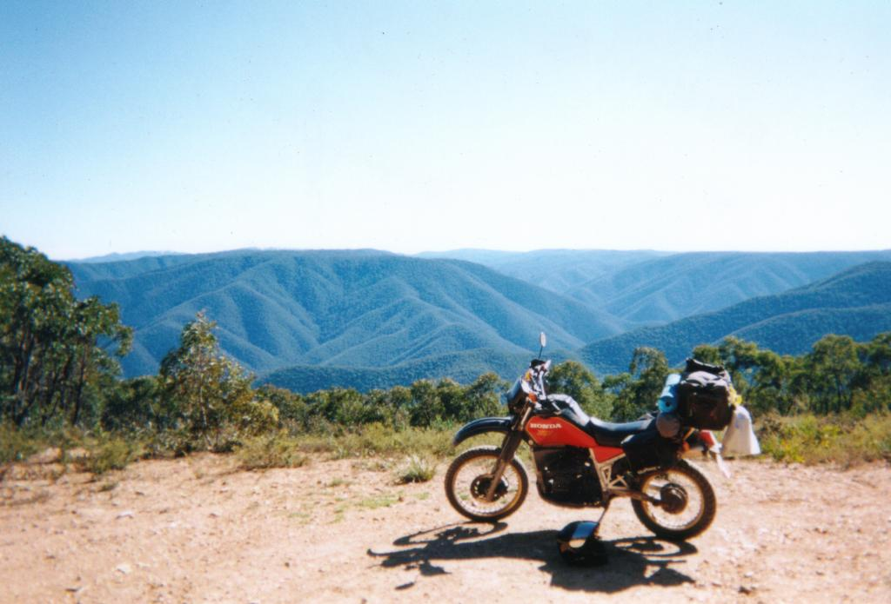
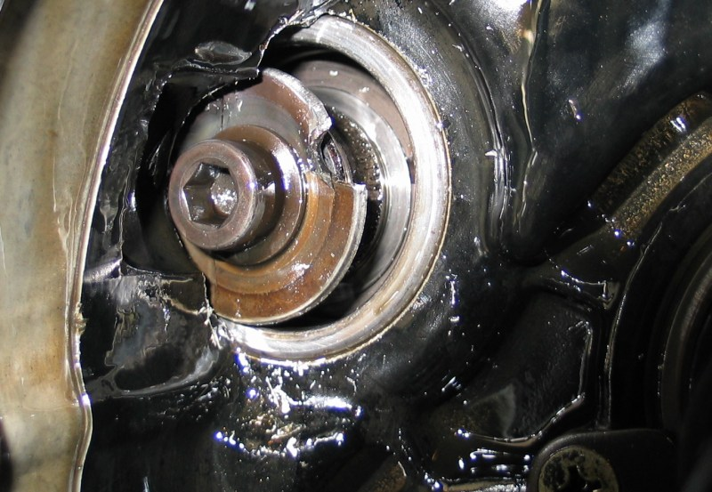
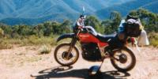
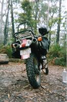
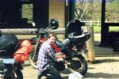
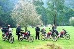
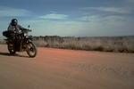
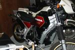
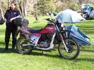

XLV holiday snap, on the helipad on the way into Talbotville ...
Sharkey's Honda XLV750R page
On this site:
Other XLV-related sites:
Whatever happened to my XLV?

On the way home from Wintersun 2004 a gearbox bearing failed completely,
filling the engine with steel and aluminium scrap, pretty much destroying the
engine. Oddly enough, it got home anyway, and it was only when
I drained the oil and a ball-bearing or two fell out that I realized
just how badly I'd stuffed it. If I'd had the sense to stop in Ouyen,
there'd be a lot more recoverable.
This is all terribly out of date. I rebuilt that one around an replacement
engine (thanks Greg H) and also I bought a BMW R100GS, and then a few years later
I stacked the BMW quite hard and put myself off bikes for a while.
I eventually got the XLV back on the road but I'd kind of lost interest by
that point and it sat there for ten years until finally, in 2022, I've gotten
rid of the XLV and all its parts. Farewell, XLV750R.
More photos:
- 
Somewhere near Talbotville, in the Dargo high plains
- 
On the trail, coastal Gippsland
- 
Two years later, filling the topbox with beer and
ice at the Dargo Pub.
- 
XLVs at the Dargo High Plains Rally 2001
- 
My XLV on the trail ... (photo by Anton)
- 
Clean XLV in the National Motorcycle Museum in Nabiac
... (photo by Nev)
- 
The XLV and me at Dargo 2003 ... photo by Simon Ward
What's in a Name?
- The XLV is a part of the Honda XL series of road-trail bikes.
- The XLV is a V-twin.
- The XLV is a 45°V, and 45 is XLV in Roman Numerals.
- 750 cc is approximately 45 ci
That still doesn't explain the R, of course :-)
{kind=link}
{kind=link}
{kind=link}
{kind=link}
{kind=link}
{kind=link}
{kind=link}